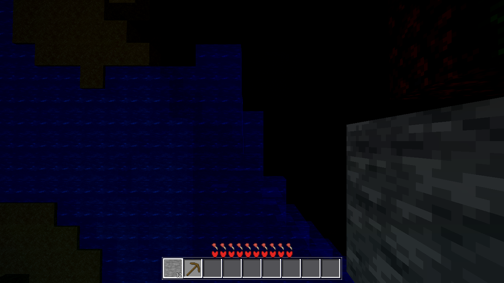

Verdict: DONE — all gates green, coordinator re-verified independently. The atlas tint bake
(data.gd::_bake_atlas_tints) now tints all 32 anim frames of the water strip
(row rc.y + f*TILE_PX), so the fluid_anim shader (TILE_F 1/32) never shows a
grey frame. Water is blue every frame; the per-frame noise animation is preserved (tint is
multiplicative, per-pixel).
godot/autoload/data.gd (only code file): the per-tile pixel loop in
_bake_atlas_tints is wrapped in for f in range(block_anim_frames(tid)), tinting
row rc.y + f*TILE_PX + py. apply_atlas (texture-pack swaps) needs no second copy —
it delegates to the same function (data.gd:258), verified in-diff. AC-0138 dedup
(baked.has(rc)) and the WHITE-tint skip are retained; grass/leaves have anim 1 so
their behavior is byte-identical (loop runs once); only water (id 5, anim: 32, strip at
atlas (224,0), 1024px) gains rows 1–31. No hard-coded 32.
| gate | result | expected | status |
|---|---|---|---|
| G0 headless | --quit, 0 SCRIPT ERROR | 0 | PASS |
tintverify (coordinator's own probe, extends SceneTree, runtime /root/Data lookup, raw = res://assets/blocks_atlas.png vs baked Data.atlas_tex) | 32 frames × 49 samples = 1,568 px, 0 bad, max per-px deviation 2 (float→uint8 rounding); frame0 center [35,81,178], frame16 center [32,73,160] — exact match to the builder's probe values; 3 distinct center values (animation intact); grass control tile dev 3 (unchanged) | every frame ≈ raw × TINT_WATER (47,107,235) ±2; no grey frame | PASS |
| genhash (r4, seed 44) | 25/25, run1 == run2, byte-identical to AC-0143 baseline | unchanged (atlas tint ≠ world data) | PASS |
| SMOKE battery (player;interact;light;fluids;genhash) | 5 EXACT: player 136.78/2.82; interact place_ok true / cell 2 / breakable 2; light 10/15/14; fluids 2730/2730 + 888 stable + 25/9 | HARNESS §3 exact values | PASS |
render (xvfb, R=1, straight-down over water cell (−1,10), AWECRAFT_TIME=0.15 + AWECRAFT_ANIM_PHASE=0.15) | water fills the frame blue with the tinted per-frame noise pattern — no grey (screenshots/water-frame-mid.png) | blue at a non-zero anim frame | PASS |
Logs: .scratch/AC-0151-gates/ (g0 via inline count, genhash1/2.txt, battery.txt, render via builder).
Known non-fatal noise: 17× threadgen_handoff "Cannot convert argument 2 from Nil to PackedByteArray"
(world.gd:627) across the 5 battery arms — pre-existing class (builder stash-verified: identical lines
with the fix reverted; count varies 3–17 per run, AC-0137-class threadgen transients). All arm values EXACT regardless.
baked == raw × TINT_WATER (no grey anywhere), which the probes assert pixel-wise.AWECRAFT_TIME: that env sets Game.time_of_day
(day/night); the shader frame = elapsed TIME + AWECRAFT_ANIM_PHASE (0.3 s/frame, confirmed in
data.gd:274 + fluid_anim.gdshader). Immaterial post-fix: the pixel probe proves every
frame is identically tinted, so blue at any frame.Lava (id 24) also has an anim strip (anim: 20 @ (0,32)) but block_tint(24) returns WHITE —
lava was never tinted by design; no grey-flicker analog. Nothing to do within this task's scope.

| file | change |
|---|---|
godot/autoload/data.gd | +6/−6 in _bake_atlas_tints: anim-frame loop around the tint pixel loop |
tasks/AC-0151/spec.html | Builder notes section appended (AUTO sections untouched) |
tasks/AC-0151/continuity.md | §01 builder log |
tasks/AC-0151/screenshots/water-frame-mid.png | render proof |
AC-0151 · coordinator-verified 2026-08-30 · build 20260830-12xx (see TASKS.yaml DONE comment) · next queue: AC-0152 (user-inserted) → AC-0109 → AC-0150.